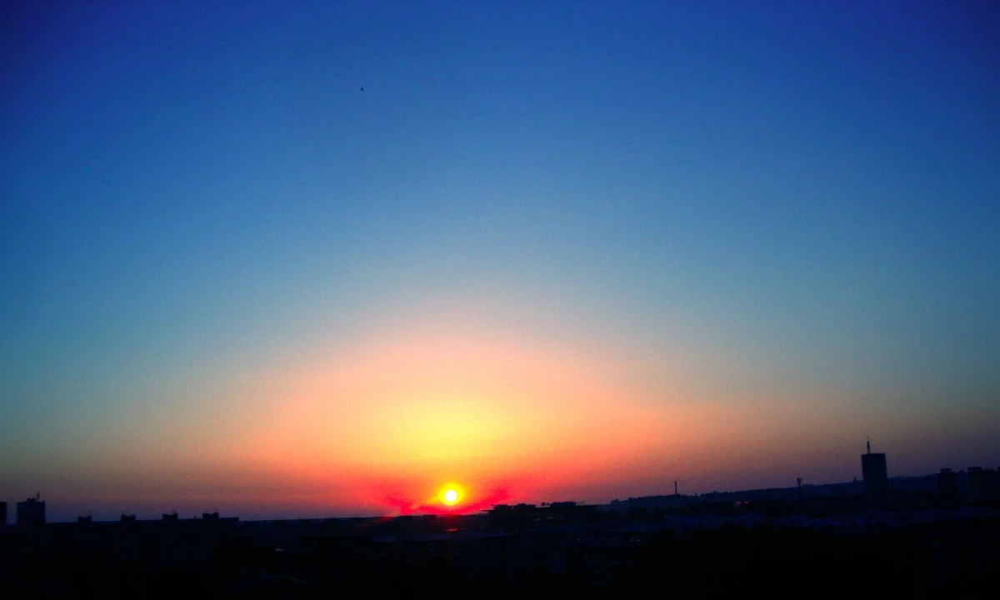

原创摄影 / 视频作品 · 2024
贝尔格莱德的黎明前夕
在 150 多个清晨里，我从新贝尔格莱德“Televizorka”大楼的十一层记录光线、城市和自身目光的变化。精选照片最终成为一部关于时间、寂静与苏醒中的贝尔格莱德的个人视频记录。
了解更多
在 150 多个日出之前的清晨，我从新贝尔格莱德“Televizorka”大楼十一层捕捉城市与郊区的轮廓。
地点始终不变，但景象、目光与渺小的我都在改变。太阳升起的位置也在移动；云朵、色彩与季节轮替，新一天的光也随之变化。
这些精选照片构成了这部视频作品——一份关于时间、寂静与苏醒中的贝尔格莱德的个人记录。作品献给我已故的母亲。
摄影、素材选择、概念与剪辑：Quark Mark。